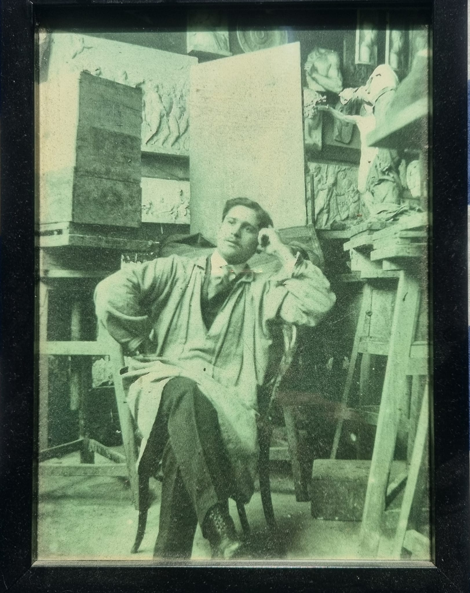
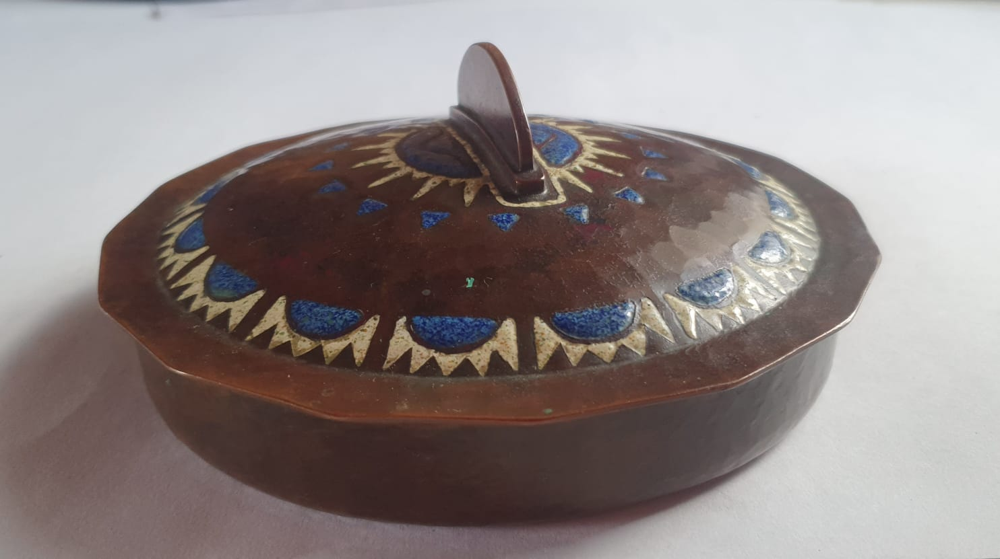
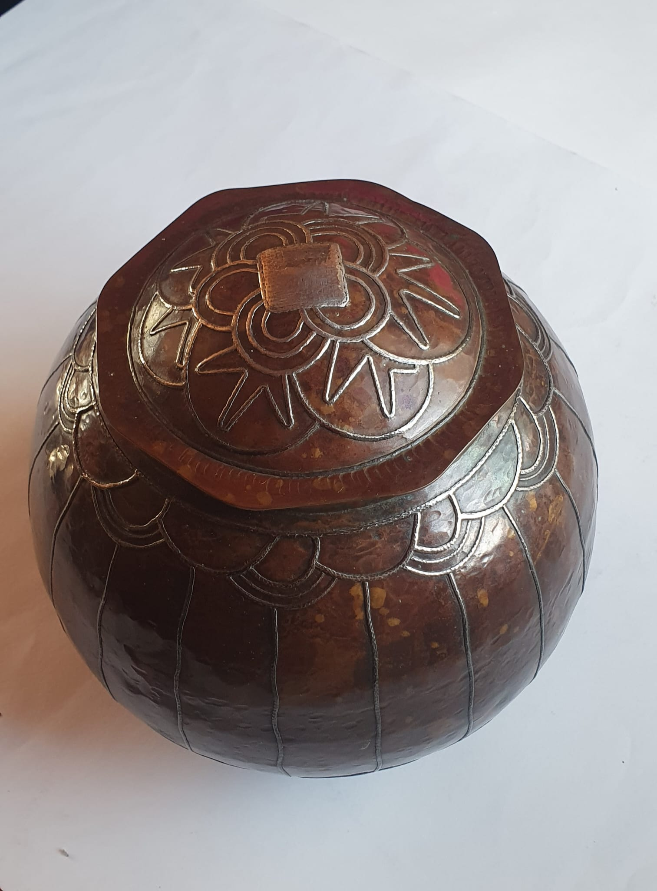
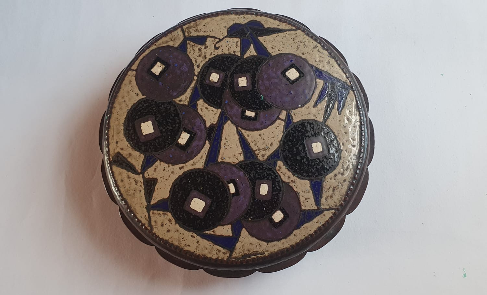
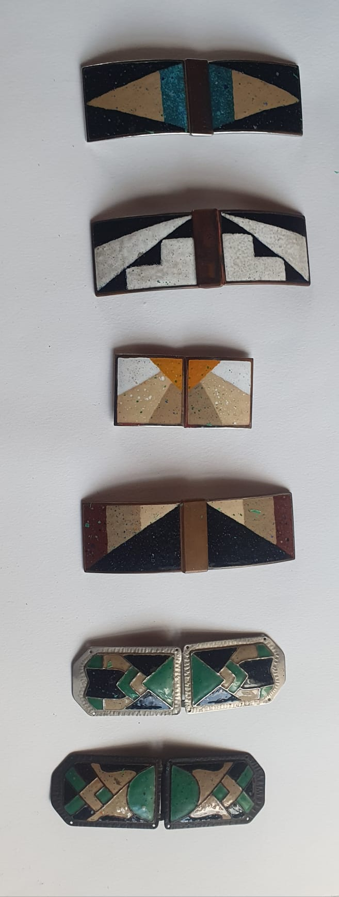
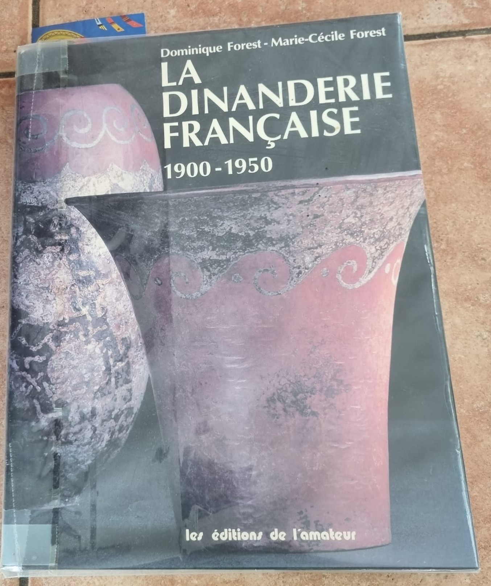

ARTISTE · DINANDIER · ÉMAILLEUR
Pierre
Carrel
1892 — 1951
Une œuvre dans le métal, entre savoir-faire d’atelier, recherche décorative et modernité des arts décoratifs.
Découvrir son parcours →
Né à Genève le 27 septembre 1892 de parents français, Pierre Carrel se forme dans l’atelier familial puis développe à Sceaux une activité de dinandier et d’horloger.
01 — BIOGRAPHIE
Le métal comme
matière d’art
Né à Genève le 27 septembre 1892 de parents français, Pierre Carrel travaille dès l’âge de quatorze ans dans l’atelier de son père. Il y apprend la gravure, la ciselure et l’émaillage, avant de devenir élève à l’Ecole des arts industriels et des beaux-arts de Genève. Après avoir combattu pour la France durant la Première Guerre mondiale, il se fixe à Sceaux en 1919 et construit l’atelier d’où sortiront ses dinanderies. Dans les années vingt, il travaille un temps chez son compatriote Jean Dunand. Ses deux activités principales sont la dinanderie et le dessin d’horlogerie. Il réalise ainsi pour Hour-Lavigne des pendules exposées au Salon d’automne en 1928, 1930, 1931 et 1932. En tant que créateur pour cette maison, il reçoit à l’Exposition coloniale de 1931 le diplôme d’honneur. La boutique d’orfèvrerie-bijouterie « La Gerbe d’Or », rue de Rivoli, pour laquelle il réalise des affiches publicitaires, expose et vend ses dinanderies pendant une quinzaine d’années : du Salon d’automne de 1923 à l’exposition du musée des Arts décoratifs en 1937. Il dessine également des chaussures et des boucles de ceinture pour le grand couturier Paul Poiret.
S’il ne dédaigne pas l’étain, le plomb ou le maillechort, Pierre Carrel privilégie le cuivre monté au marteau, émaillé ou incrusté d’argent. Carrel est cité à l’occasion de l’Exposition des arts décoratifs de 1925 comme l’un de ceux qui, à l’égal de Dunand et Linossier, savent enrichir le métal par le travail d’incrustation, de damasquinure et de patine. Lors de cette manifestation, le commissariat général lui confie la réalisation d’un insigne émaillé à distribuer aux officiels.
Au regard de ses formes robustes et originales, de son décor toujours adapté et de ses belles patines, l’œuvre de Pierre Carrel mérite, aujourd’hui, d’être redécouverte.
02 — GALERIE
Objets &
matières
Photographies d’objets conservés dans la collection familiale. Les attributions et datations doivent être confirmées lorsqu’elles ne sont pas documentées par une source.




Une pratique où la matière, le geste et le décor sont indissociables.
PIERRE CARREL · 1892–1951TECHNIQUES & MATÉRIAUX
Le travail de la matière
La documentation disponible évoque notamment le cuivre monté au marteau, l’émaillage, les incrustations d’argent, la damasquinure et les patines.
03 — REPÈRES
Quelques
dates
Naissance
27 septembre, à Genève.
Sceaux
Installation et développement de son atelier.
Arts décoratifs
La notice le cite dans le contexte de l’Exposition internationale des arts décoratifs et industriels modernes.
Salon d’automne
Des pendules réalisées pour Hour-Lavigne y sont mentionnées.
Exposition coloniale
Diplôme d’honneur mentionné dans la notice.
Arts décoratifs
Exposition et vente d’objets à l’exposition du musée des Arts décoratifs.
Décès
04 — ARCHIVES
Une référence
bibliographique

OUVRAGE DE RÉFÉRENCE
La Dinanderie française 1900–1950
Dominique Forest et Marie-Cécile Forest, La Dinanderie française 1900–1950, Les éditions de l’Amateur, 1995.
La notice consacrée à Pierre Carrel constitue ici une source documentaire importante pour retracer son parcours, ses techniques et certaines de ses participations aux expositions.
La photographie présentée est celle du livre conservé dans la famille. Pour une reproduction publique de pages intérieures, vérifier les droits de reproduction de l’ouvrage.
SOURCES
Forest, Dominique & Marie-Cécile Forest. La Dinanderie française 1900–1950. Les éditions de l’Amateur, 1995.
Documentation et photographies complémentaires issues des archives familiales.